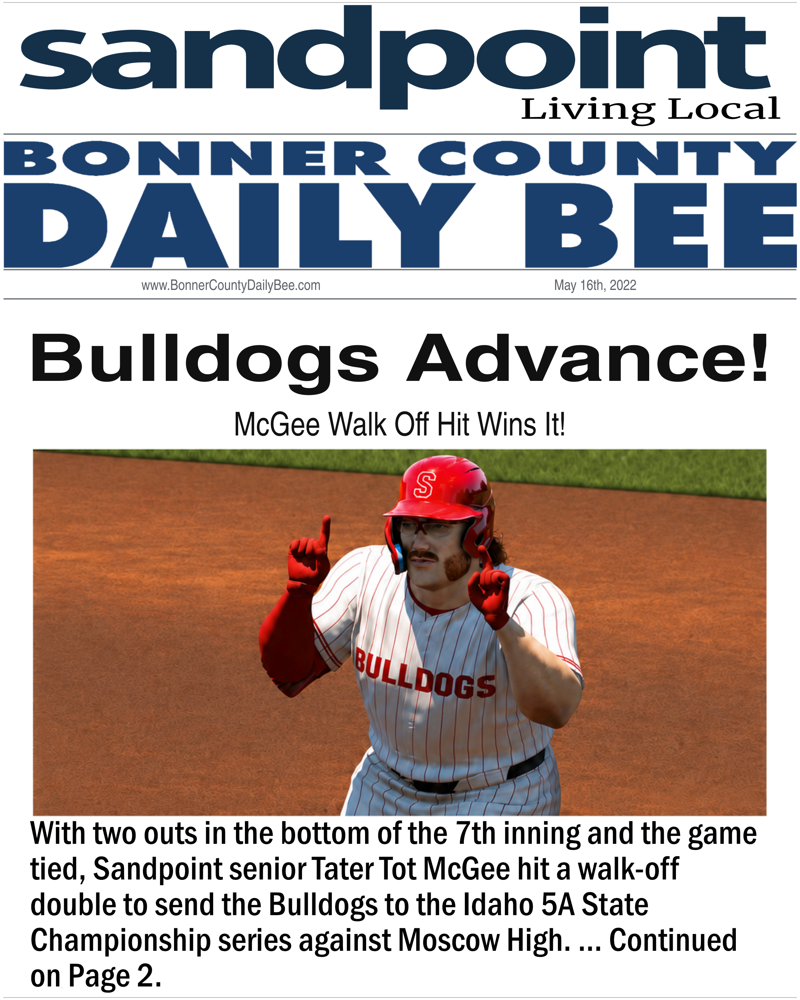
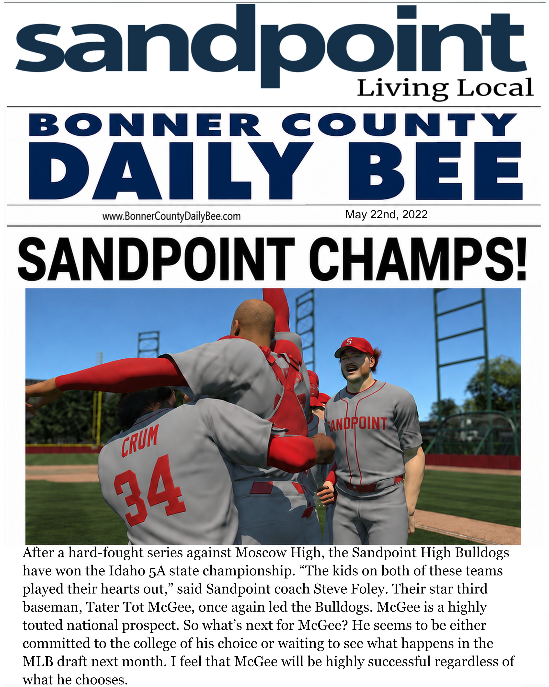

01 ·
Bulldogs Advance!
McGee's walk-off double sends Sandpoint to the state championship series.

Before PACIFIC, there was Sandpoint. The high school and draft articles, together in chronological order.
Read the original newspaper pages below. Select any page to open the full-size article in a new tab.
McGee's walk-off double sends Sandpoint to the state championship series.

Tater's high school chapter ends with an Idaho 5A state championship — the moment that launches the college and draft path.

Seattle selects Fresno State third baseman Tater Tot McGee first overall.